Helping pet brands build trust through authentic content, professional pet expertise and real-life storytelling.
TRUSTED BY
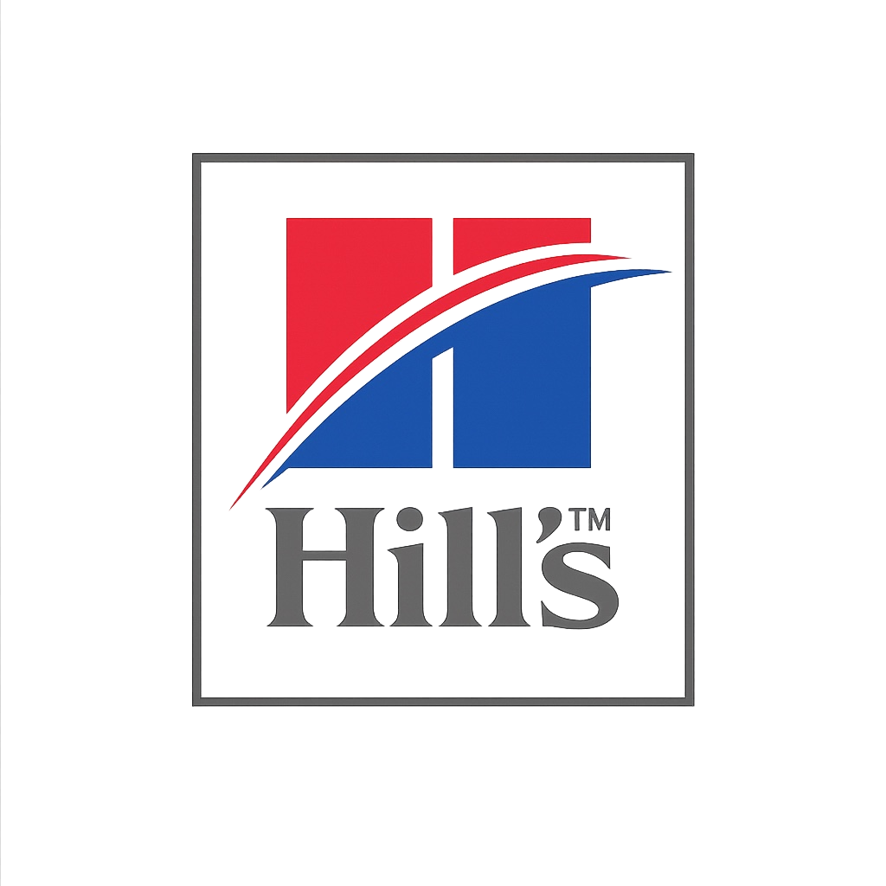

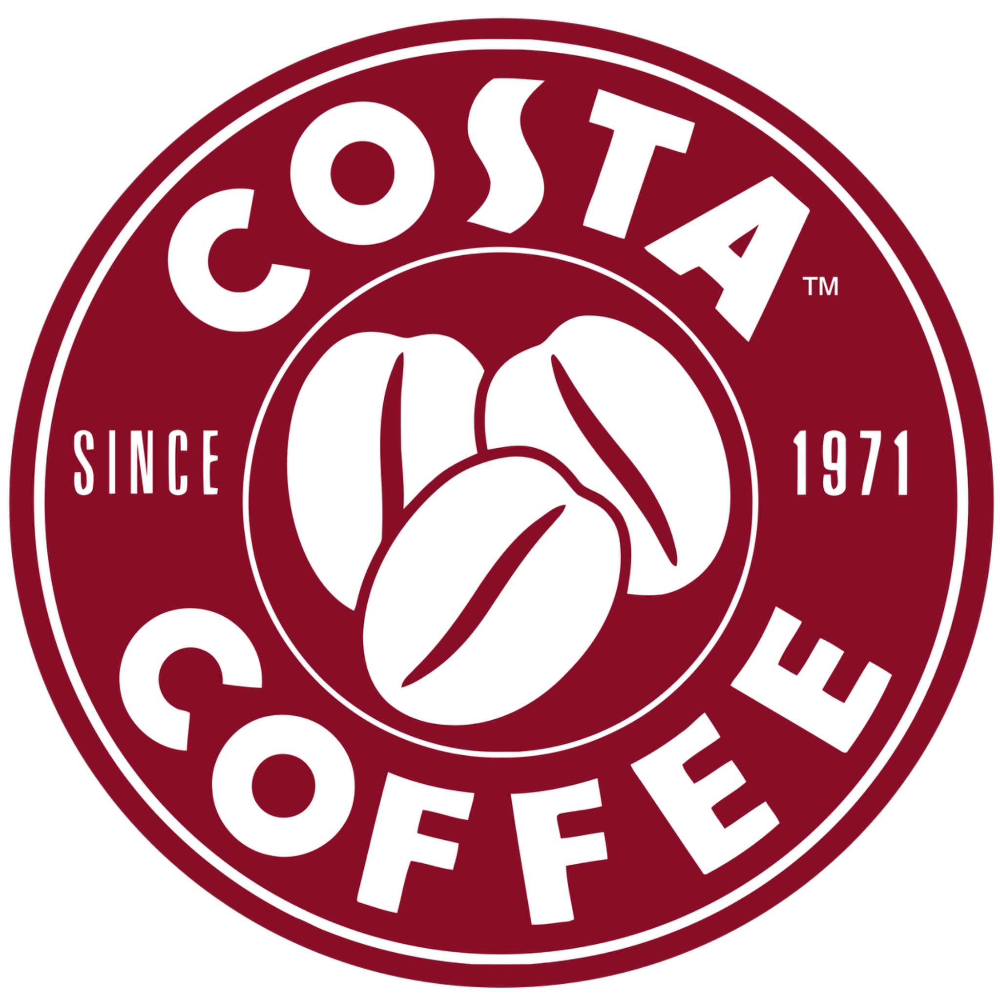
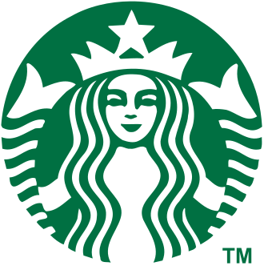
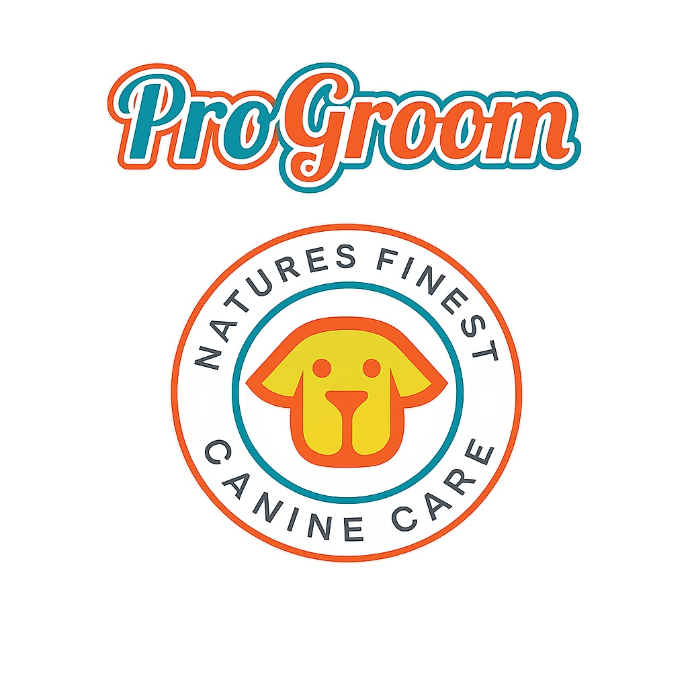
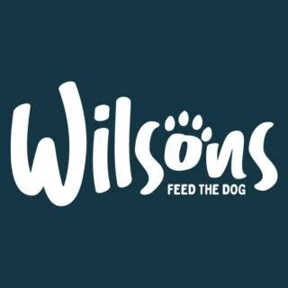

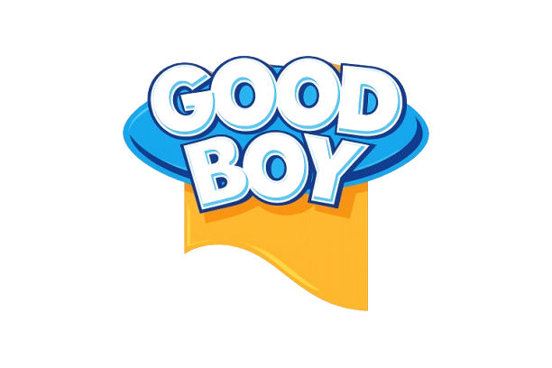
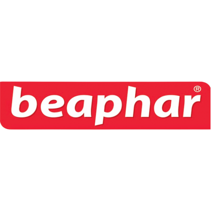


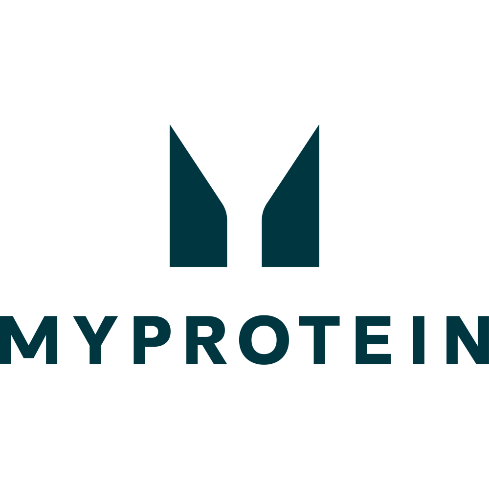
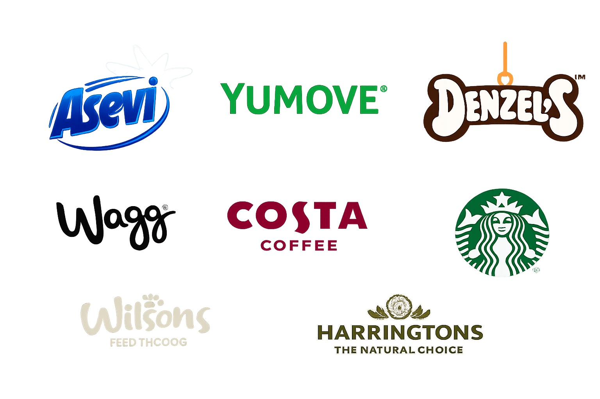
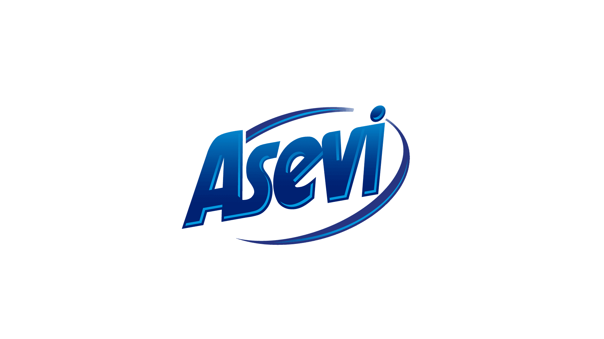
MEET SOPHIE

Tess and I on my first day of school
Hi! My name is Sophie. I am a 20-year-old pet content creator from Bedfordshire, UK. Together with my partner Jasper we are currently striving to buy our first house and build our dream careers, with the help of our beloved animals.
Living with mild cerebral palsy has made me very determined and resilient. Throughout my life animals have been my source of comfort and confidence. My very first family dog, Tess, came into my life at the age of three, and I considered her and my guinea pigs as my best friends. The experiences of those days gave me an inseparable connection with animals and helped me to build my career.
I started my pet career at the age of 9, volunteering in a dog grooming salon. I have accumulated many years of experience by working in dog kennels, dog walking, pet sitting and rehabilitation of rescued dogs, which needed patience and understanding.
At the moment, I manage to combine my experience with my passion to produce high-quality and engaging user-generated content together with my three dogs Alfie, Nellie and Bramble.
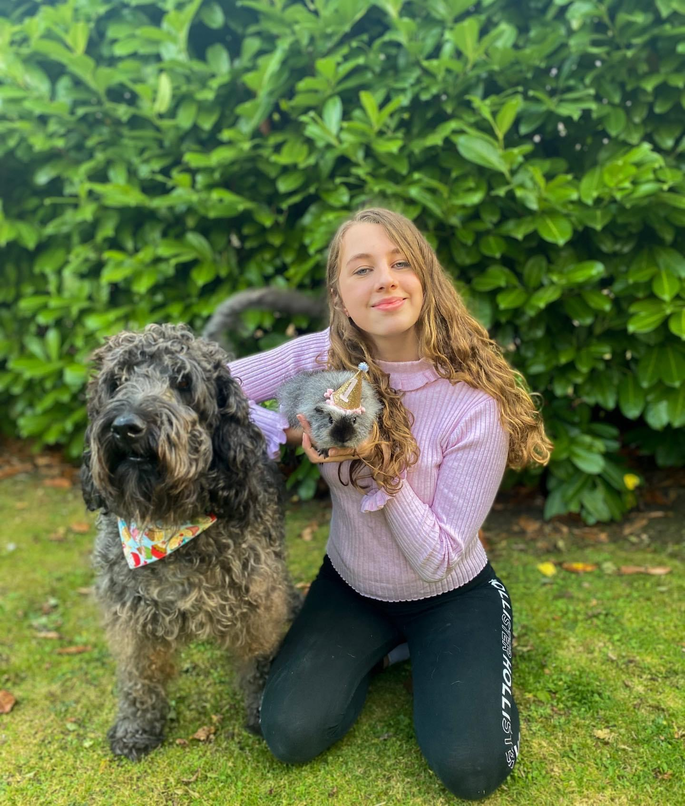
Our last picture together
Why brands work with me
Pet Owner
Dog Groomer
Business Owner
Storytelling
Content
UK Audience
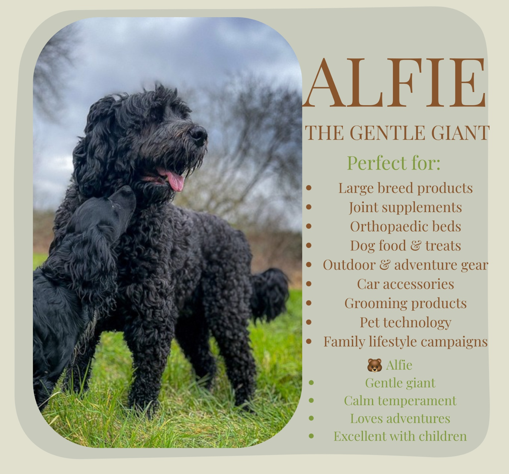
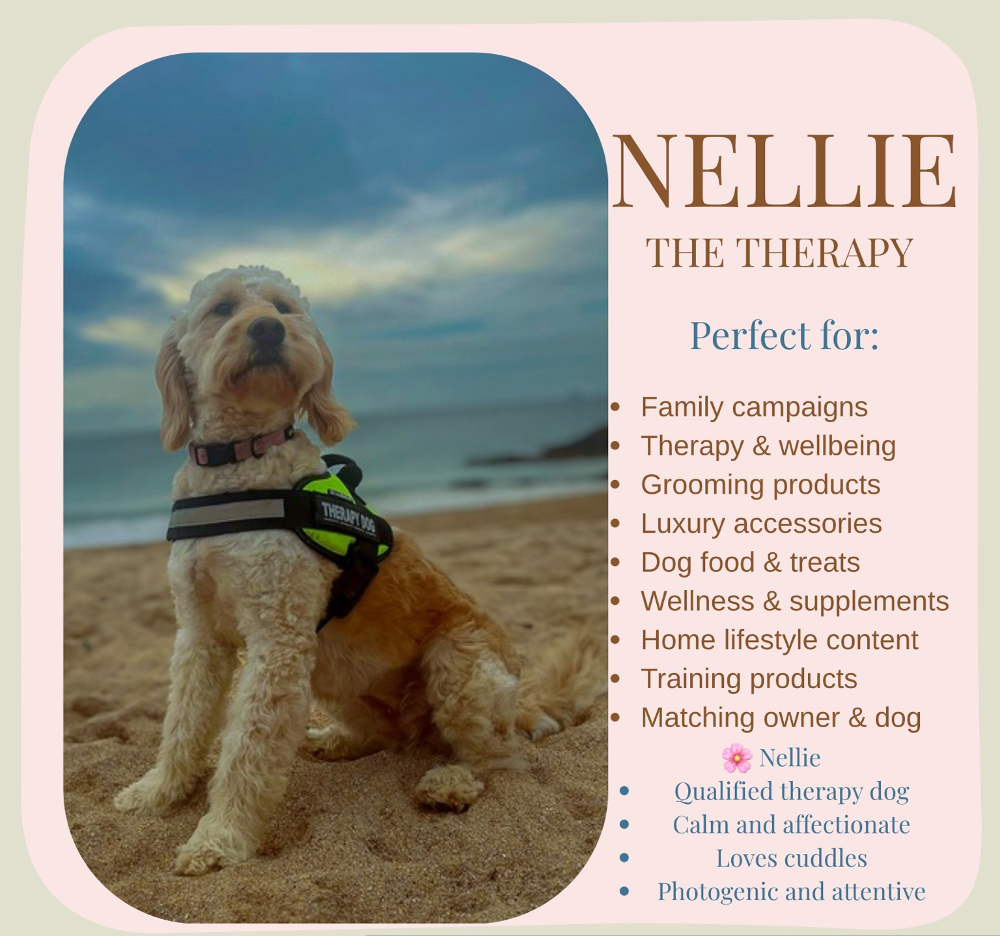

Let's Connect
Let’s create warm, authentic content that pet owners trust.
Bedfordshire, UK